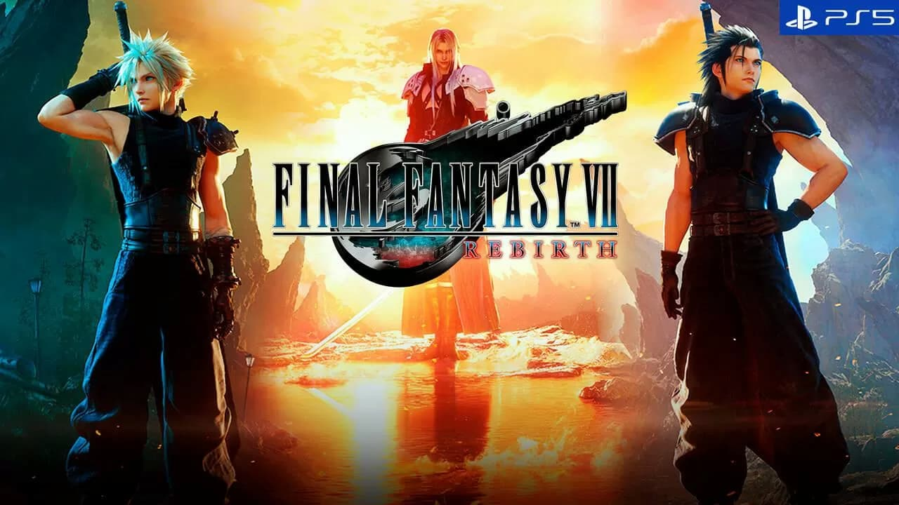
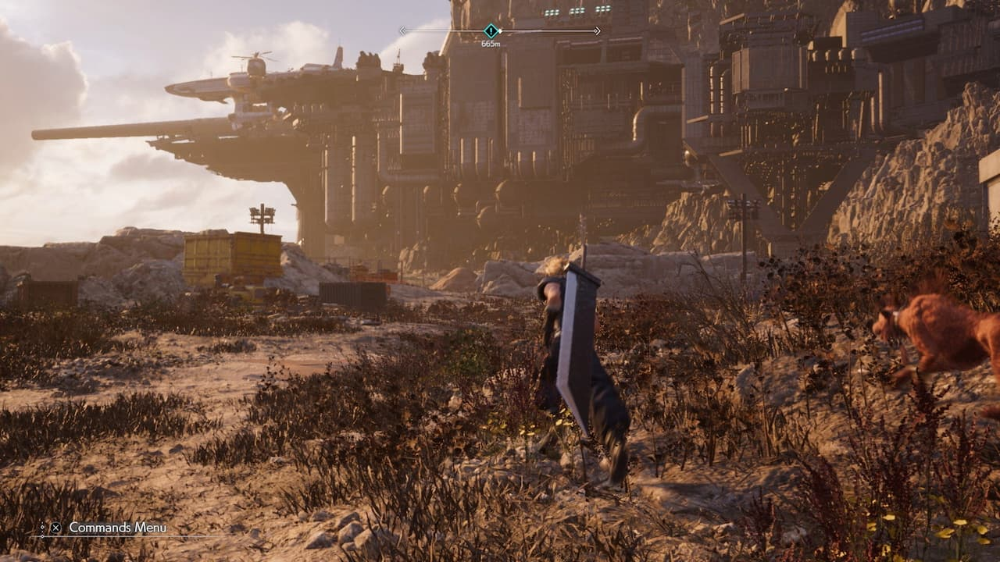
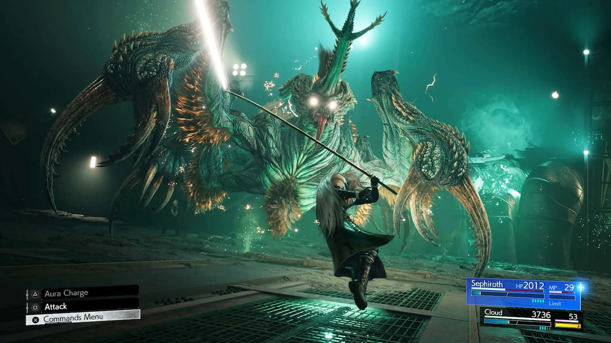

Impresiones finales Final Fantasy VII Rebirth
Encarnamos a Cloud, Red XIII, Sefirot y compañía en los primeros compases de una aventura superambiciosa con novedades en la exploración y el combate.
Calificar a Final Fantasy VII Remake como el mejor remake de la historia es polémico, y precisamente por eso lo es. Es digno de aplauso que en un periodo de estancamiento creativo en el videojuego AAA Square Enix se atreviera a reconstruir una de las obras más queridas del medio con cambios en la historia, adaptando las mecánicas a las tendencias actuales, y aún más importante, realizando un comentario metanarrativo sobre el original.
Con el final rupturista de aquel título, no nos aguantábamos las ganas de probar Final Fantasy VII Rebirth, la segunda parte de la trilogía que recompone el JRPG de 1997. Hace unos días, durante alrededor de hora y media, por fin pudimos hacerlo. El RPG de acción que llegará el 29 de febrero a PS5 retoma la historia donde la dejó el anterior, tras salir de Midgar, y avanzará hasta llegar a la Capital Olvidada.
Por supuesto, habrá inevitables cambios respecto a la obra original, y a lo largo de sus 100 horas de juego profundizaremos en los personajes y en los momentos icónicos de Final Fantasy VII, exploraremos en chocobo y en vehículos varios mapas de un mundo mucho más amplio repleto de contenidos secundarios y "minijuegos a raudales", en palabras del productor Yoshinori Kitase y el director Naoki Hamaguchi, disfrutaremos de novedades en el fantástico sistema de combate y uniremos fuerzas con aliados conocidos y nuevos. En resumen, viviremos una fantasía final épica, espectacular e increíble.
Sí, manejar a Sefirot es tremendo
La primera sección de la demo no podía ser más épica, más espectacular ni más increíble; aunque desconocemos si Rebirth comenzará justo aquí. Se trata del momento en el que un joven Cloud y un heroico Sefirot acompañan a Tifa por el Monte Nibel. Es una sección lineal con muy buen ritmo, donde se intercalan con un compás perfecto los combates con el avance por el escenario, que continúa siendo tan rígido como en Remake: hay escalada a lo Uncharted con peldaños que se caen repentinamente, hay flechas que obligan a los personajes a subir escaleras o pegarse al muro para avanzar por un camino estrecho, y un pequeño minijuego basado en limpiar una zona de gas mako para activar un ascensor; no es el colmo de la originalidad ni del buen diseño, pero ayuda a marcar el ritmo.
Lo fundamental de esta parte, en la que no parábamos de encontrar materias con las que personalizar las capacidades de Cloud en el combate, estaba, evidentemente, en que podíamos controlar a Sefirot. Encarnar al supuesto gran villano de la historia nos hace sentir poderosísimos: sus golpes son brutales, al realizar varios impactos seguidos puede ejecutar un movimiento espectacular, sus habilidades no dejan títere (en este caso, bicho) con cabeza (en este caso, patas), y por si fuera poco, tiene un satisfactorio desvío o parry que requiere cierto tino.
El sistema de combate es tan brillante como en Remake, que sorprendió a aficionados a los juegos de acción y a fans de los turnos con una mezcla muy bien pensada, pero aquí hay novedades más allá de las materias nuevas, de las habilidades inéditas y de los aliados que se suman a las contiendas, cada cual con su plantel de movimientos. Lo más destacable son las habilidades sincronizadas: cuando un personaje utiliza habilidades se llena la barra de sincronización, lo que incita todavía más a dar órdenes constantemente a los dos personajes del grupo que no estamos controlando activamente. Las habilidades sincronizadas consumen parte o la totalidad de esa barra: son movimientos conjuntos espectaculares en su puesta en escena que implican a un dúo, en este caso Cloud y Sefirot, pero un mismo héroe puede tener habilidades sincronizadas de diferente efecto con varios compañeros.
Con todo este arsenal a nuestra disposición, las batallas contra los monstruos que salían al paso en el Monte Nibel eran poco más que un paseo, pero el jefe final sí que nos obligó a estar atentos a nuestros puntos de vida y mágicos, a la barra de límite y a otros indicadores, además de a las esquivas, los bloqueos y a algunos ataques que incapacitaban a nuestro personaje, provocando que tuviéramos que controlar al compañero para liberarlo de las garras del monstruo. Las escenas cinematográficas que se suceden en esta batalla son increíbles, con planos realizados con muy buen gusto dignos de enmarcar.
Un mundo abierto a las puertas de Jonun
Tras ese inicio tradicional respecto a lo que ofrecía FF7 Remake, llegó la segunda parte de la demo: una zona de mundo abierto. Rebirth no será un gran mundo abierto, sino que tendrá un modelo similar al de Final Fantasy XVI, con varias zonas amplias que explorar con libertad. La que pudimos recorrer es la que queda a las puertas de Junon, un erial casi posapocalíptico. Quizá fuera por eso que nos dejó un poco fríos.
Sí, nos hizo mucha ilusión recorrer el lugar cabalgando un chocobo (por cierto, Red XIII sobre una de estas criaturas es bastante gracioso), personalizarlos estéticamente en una granja y utilizar su capacidad de rastreo para descubrir objetos y materiales por el mundo abierto. Se estructura en puntos de viaje rápido, paradas de chocobo que hay que encontrar para activar, a lo que nos ayuda un adorable chocobito que, por supuesto, podemos acariciar. Pero no vimos mucho que hacer en este lugar. Nos podíamos salir del camino para dar con algún cofre oculto, recopilar hierbas para utilizarlas en un nuevo sistema de fabricación, y participar en retos de combate contrarreloj que podemos completar cumpliendo ciertos desafíos para aumentar las recompensas, algo que puede dar mucho de sí de cara al contenido final de juego. Tras probar a Sefirot en la primera parte, en esta contábamos con Cloud, acompañado de Barret, Tifa, Aeris y Red XIII; por cierto, se ha implementado un sistema para formar grupos de tres personajes y cambiar entre ellos sin necesidad de entrar en menús antes de los combates. Por ser la novedad, nos centramos en el felino, que a los mandos se percibe tremendamente ágil y que tiene un modo venganza más poderoso que podemos activar tras recargarlo utilizando habilidades. Es algo que viene del Remake, pero nos sigue pareciendo increíble cómo Square Enix consigue que cada personaje tenga su identidad jugable.
En Junon, después de una secuencia hilarante en la que el grupo se encuentra con Yuffie, nos enfrentamos a un jefe final que no ofreció demasiada complicación aunque su puesta en escena era muy vistosa, pero que nos sirvió para trastear con las numerosas habilidades de sincronización que los personajes tenían a su disposición. Es emocionante ver a Cloud y Barret unir fuerzas, y tremendamente cómico ver al soldado de Avalancha lanzar a Red XIII hacia el enemigo con su cañón como quien tira un saco de papas.
Una puesta en escena espectacular que evoluciona, pero no revoluciona
Hemos mencionado varias veces la fantástica puesta en escena, las secuencias cinematográficas cuidadísimas y el sentido del espectáculo y del desfase que tiene Final Fantasy VII Rebirth, por no hablar de una banda sonora épica, compleja y preciosa. Pero lo cierto es que esperábamos algo más en lo técnico. Es innegable que es un juego muy vistoso, que el diseño de los personajes y de los grandes monstruos es increíble, que las animaciones faciales están a un nivel altísimo y que hay mejoras en la iluminación, en las texturas y en la distancia de dibujado.
Pero como en el juego estrenado en PS4, hay claroscuros. Hay texturas que cantan, hay animaciones poco fluidas y se aprecia cierta tosquedad en el movimiento y en la exploración de los entornos. Existen dos modos gráficos: calidad apunta a los 4K y los 30 FPS muy estables; y rendimiento prioriza los 60 FPS, aparentemente fijos como una roca. Teniendo en cuenta que esto es una versión en desarrollo y que probablemente habrá cambios de cara al lanzamiento, nos escama que el modo rendimiento se vea tan borroso.
La séptima fantasía final continúa el 29 de febrero
Sin embargo, esto no es más que una nota a pie de página de un título que promete maravillar a todos los que quedaron prendados por su predecesor. Final Fantasy VII Rebirth, con sus novedades en el sistema de combate, con la introducción de las zonas abiertas, con su intención de cubrir una parte mucho más extensa de la historia original, y con el potencial para volver a sorprender a los veteranos y a los neófitos, promete ser un RPG de acción fascinante, espectacular, y por supuesto, increíble. Lo descubriremos el 29 de febrero en PS5.